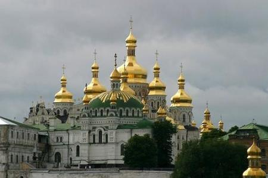
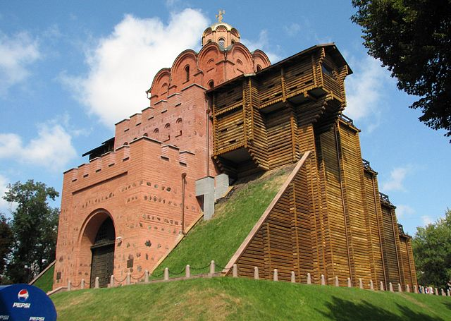
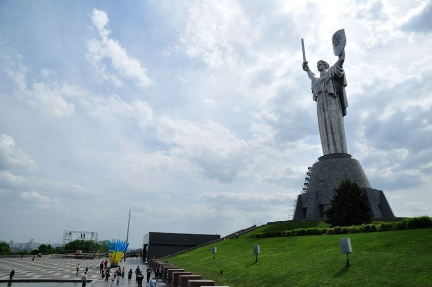

KIEV
Kiev es la capital de Ucrania, dividida por el río Dniéper y conocida por su arquitectura religiosa, los monumentos seculares y los museos de historia. El Monasterio de las Cuevas de Kiev data del siglo XI y es un sitio de peregrinación que abarca varias iglesias con cúpulas doradas. Es conocido por sus catacumbas rodeadas de cámaras fúnebres de monjes ortodoxos y una colección de objetos de oro de antiguas épocas escitas.

Dominique: La catedral de Santa Sofía tiene cúpulas doradas y verdes y mosaicos bizantinos antiguos. La iglesia barroca de San Andrés marca el inicio de la empinada calle de adoquines Andriyivskyy Descent que conecta los sectores alto y bajo de Kiev. El Museo Khanenko alberga obras orientales y occidentales, mientras que el Centro de Arte Pinchuk se concentra en obras contemporáneas de artistas emergentes. El Monumento de la Madre Patria o Rodina Mat es una enorme estatua con una espada ubicada sobre un museo de la Segunda Guerra Mundial. El Museo Nacional de Chernóbil junto con el Museo Nacional del Memorial a las Víctimas del Holodomor y los monumentos del parque Babyn Yar recuerdan a las víctimas de tragedias del siglo XX.
El Monasterio de las Cuevas es un monasterio cristiano ortodoxo en Kiev. El inicio de su existencia se data en 1051 durante el reinado de Yaroslav el Sabio. Es el monasterio más antiguo de Ucrania y uno de los lugares santos de la religión ortodoxa oriental. romano en una región bien considerada por sus yacimientos metalíferos.
La catedral de Santa Sofía en Kiev es un monumento arquitectónico sobresaliente de la Rus de Kiev. Hoy en día, es uno de los monumentos más conocidos de la ciudad y el primer patrimonio ucraniano inscrito de la Lista del Patrimonio Mundial de la Unesco, junto con el Monasterio de las Cuevas de Kiev.
La puerta dorada de Kiev fue levantada durante el reinado de Yaroslav el Sabio, Gran Príncipe de la Rus de Kiev a mediados del siglo XI. Su nombre es el mismo de la famosa puerta de las murallas de Constantinopla, expresando la ambición de Yaroslav de igualarse con el poderoso Imperio Bizantino.
La plaza de la Independencia es una plaza situada en la calle Jreshchátyk, en el centro de Kiev, Ucrania. A lo largo de los años, la plaza ha recibido varios nombres siendo Maidán el más común tras la independencia de Ucrania en 1991
La Estatua de la Madre Patria, o más comúnmente conocida como Rodina-Mat es una estatua monumental que se encuentra en Kiev, Ucrania. La escultura se yergue en la parte alta del Museo de la Gran Guerra Patria.
